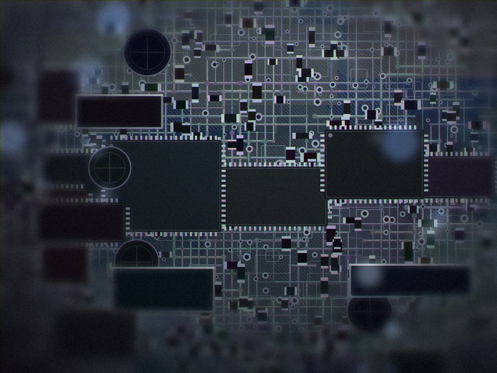
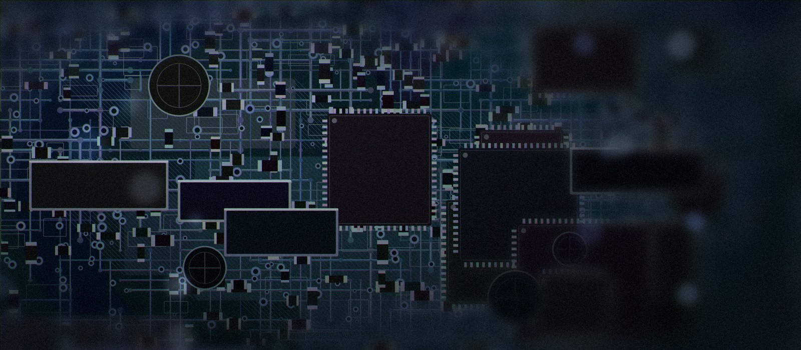

Артём К.
Руководитель сервисаОтвечает за приём техники и согласование стоимости. С ним вы говорите, когда привозите устройство.
Мы ремонтируем электронику в Магнитогорске и отвечаем за результат репутацией: 4.8 из 5 на Яндекс.Картах по 197 оценкам.
«Атом» — сервисный центр на проспекте Карла Маркса, 56, в Ленинском районе Магнитогорска. Мы занимаемся ремонтом телевизоров, ноутбуков, смартфонов и мелкой бытовой техники.
Главное отличие от гаражного ремонта — компонентный подход. Там, где проще и выгоднее поменять модуль целиком, мы находим конкретный вышедший из строя элемент и меняем его. Для клиента это почти всегда дешевле, а для нас — вопрос профессиональной честности.
Диагностика бесплатная и ни к чему не обязывает. После неё мы называем точную стоимость и срок. Пока вы не согласились, работы не начинаются, и сумма в процессе не растёт. Оплата — после ремонта, картой или наличными.
Если ремонт нецелесообразен — мы скажем об этом прямо, даже если могли бы взять деньги за работу. Если техника вернётся с той же неисправностью в течение гарантийного срока — разберёмся за свой счёт.

Никаких работ и трат до того, как понятна причина поломки.
Согласованная сумма фиксируется. Если всплывает что-то ещё — звоним и обсуждаем.
Восстанавливаем плату по компонентам, если это возможно и надёжно.
Гарантия на работы и запчасти. Гарантийный случай решаем за свой счёт.
У каждого направления свой инженер. Технику не передают «кому свободно» — ей занимается профильный мастер.
Отвечает за приём техники и согласование стоимости. С ним вы говорите, когда привозите устройство.
Подсветка, блоки питания, платы обработки изображения. Работает с панелями любых диагоналей.
Компонентный ремонт материнских плат: цепи питания, короткие замыкания, восстановление после залития.
Пайка разъёмов и шлейфов, замена модулей, микропайка. Работает с двадцатью брендами телефонов.
Пылесосы, микроволновки, мультиварки, мясорубки, фены. Берётся за технику, от которой отказываются другие.
Проводит бесплатную диагностику и проверяет сопутствующие узлы, чтобы техника не вернулась с той же неисправностью.
При сдаче техники оформляем документ с описанием устройства, его состояния и заявленной неисправности.
После ремонта выдаём талон с перечнем работ, установленных запчастей и сроком гарантии.
Оплата картой или наличными после ремонта, с подтверждающим документом.

Расскажите, что случилось с техникой. Диагностика бесплатная, стоимость ремонта согласуем до начала работ.
Заполните два поля — остальное уточним по телефону.